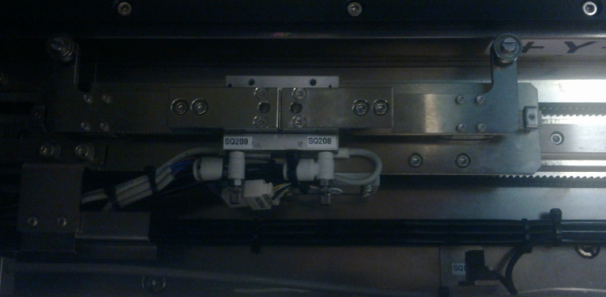
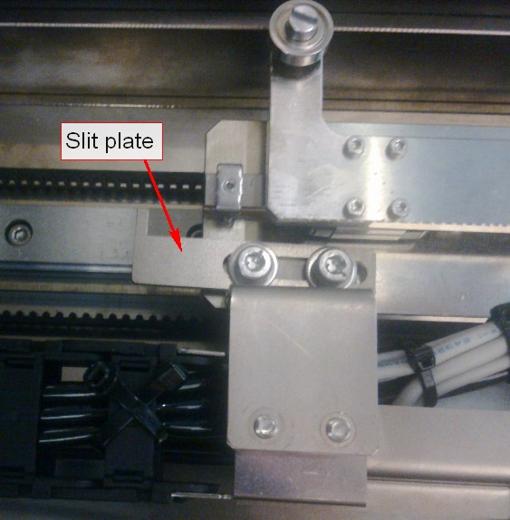

Service History
Subject: NS7KW-03 automat crash with traverser
Handler Model: NS7080W (Xilinx, S/N: 121080)
Controller: RC520
Date: 26 Mar 2008
Symptom
Traverser crashed with Automat when returning to P1 position, causing the L-shape clamper(nearest to Automat) bent.

Action
Hammer the clamper back for flatness and mount back to the traverser.
Calibrate Pulse 0 position for traverser as Pulse 0, P1 and P2 were out.
Teach P1 and P2.
Adjusted slit plate on traverser for detecting Home position of traverser as it was out of position after the traverser crashed.
Check Automat & Traverser movement, ok.
CP132 8X8 dummy device running check and alignment offset for Automat, ok.Warranty need to be raised for Tray plate in Automat as it was bent.
Advise Alan Teoh not to use slot 4 and 5 until replacement of faulty part.

Cause
Remarks
Warranty S0295 raised.
selrb 9 for Elevator. (Calib 3)
selrb 10 for Traverser (Calib 2)
.